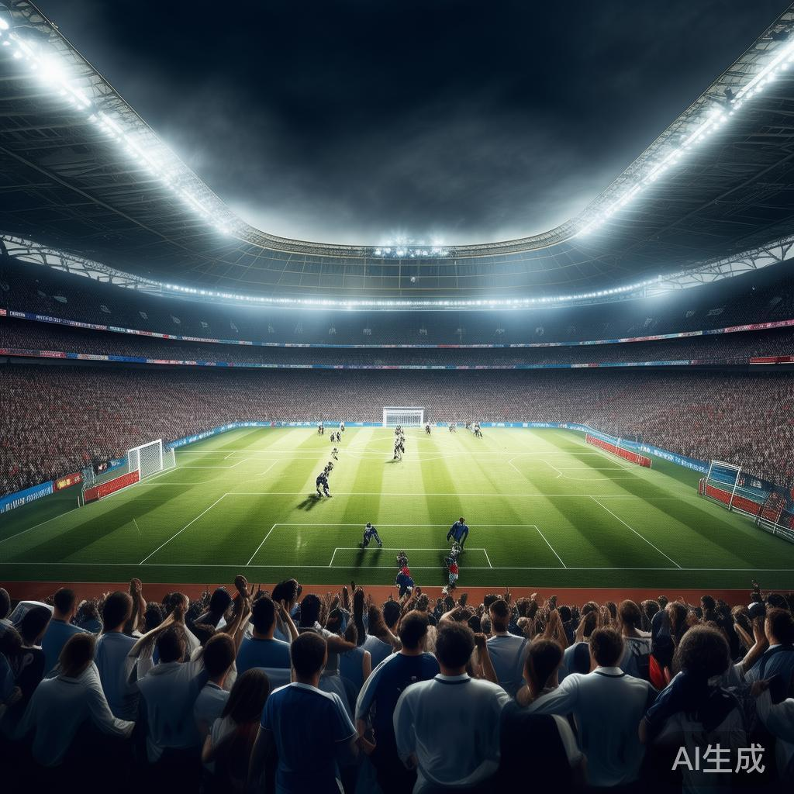
01
世界杯决赛阿根廷点球夺冠 法国前锋姆巴佩罚失关键点球
2026年美加墨世界杯决赛在迈阿密上演，阿根廷通过点球大战5-3战胜法国，成功卫冕。法国前锋姆巴佩在点球大战中罚失关键点球，遗憾落败。35岁的梅西赛后宣布从国家队退役，全球超过25亿观众见证了这一历史性时刻。法国总统马克龙现场观战，赛后称赞法国队展现了拼搏精神。
体育

2026年美加墨世界杯决赛在迈阿密上演，阿根廷通过点球大战5-3战胜法国，成功卫冕。法国前锋姆巴佩在点球大战中罚失关键点球，遗憾落败。35岁的梅西赛后宣布从国家队退役，全球超过25亿观众见证了这一历史性时刻。法国总统马克龙现场观战，赛后称赞法国队展现了拼搏精神。
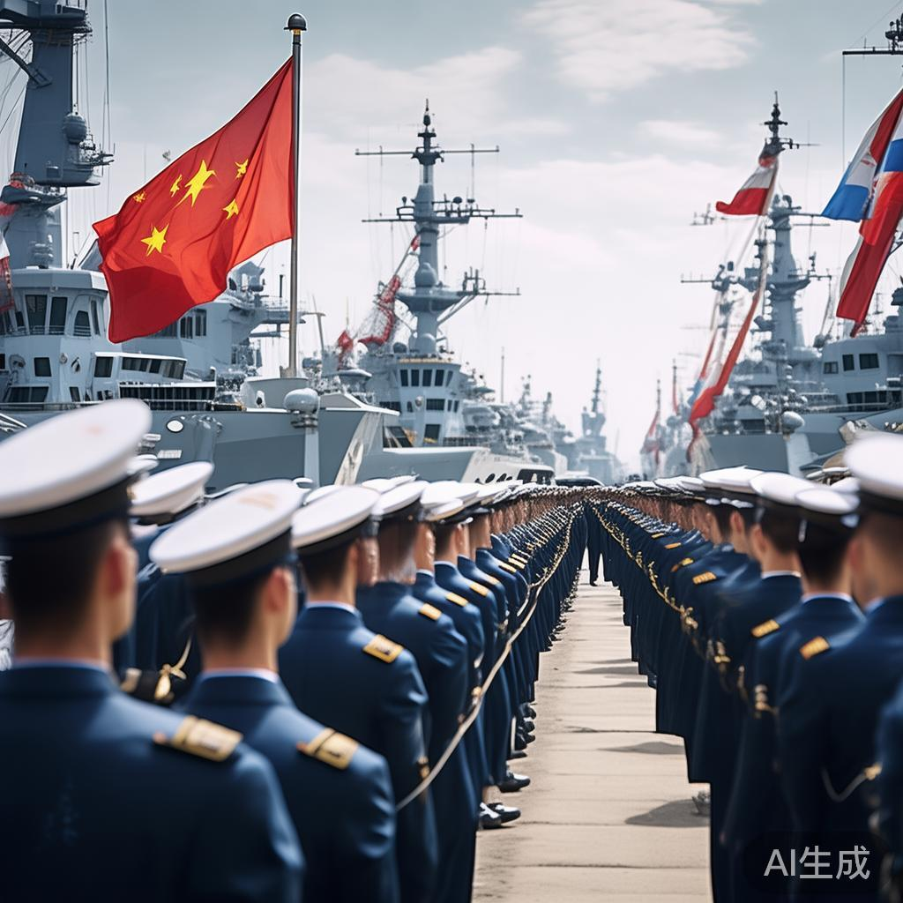
中俄"海上联合-2026"联合演习在山东青岛正式启动，这是两国海军首次在此地举行如此大规模演习。中方派出驱逐舰、护卫舰、潜艇等多型舰艇参演，俄方舰艇编队也已抵达青岛军港。演习将重点围绕海上联合补给、联合反潜、防空等科目展开，旨在深化两国海军务实合作。
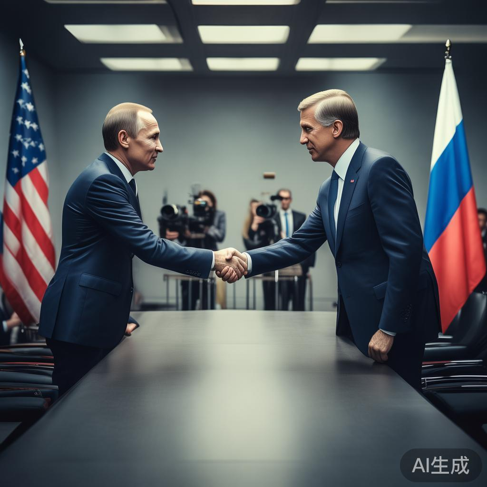
美国前总统特朗普与俄罗斯总统普京通话后表示，愿意帮助结束俄乌战争。克里姆林宫发言人称这次通话"具有建设性"。乌克兰总统泽连斯基表示，他与特朗普通话讨论了1200公里的前线局势。北约峰会将于下周召开，各方就如何结束冲突展开密集外交斡旋。
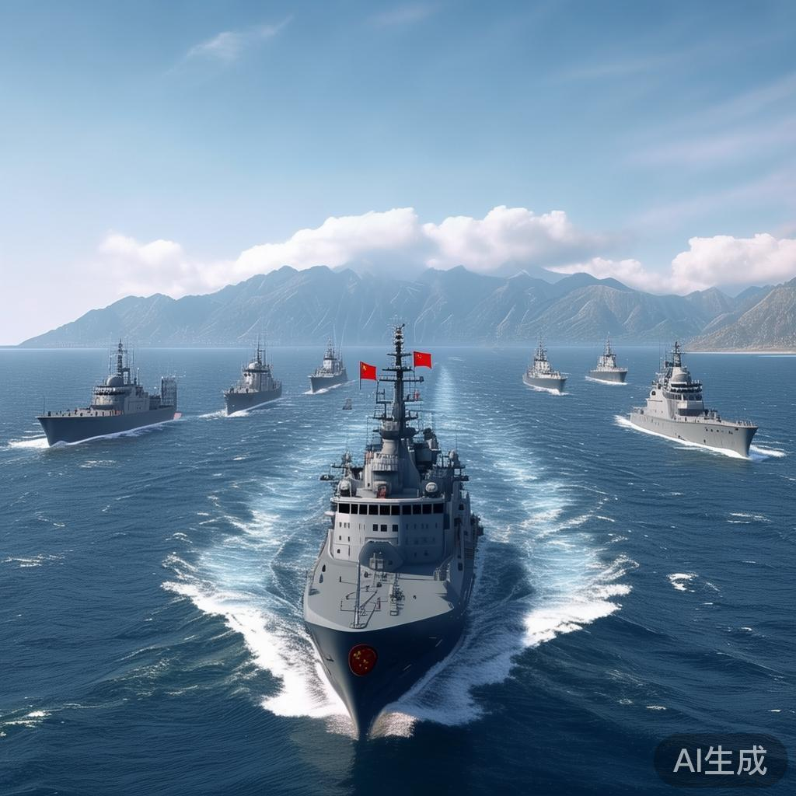
日本防卫省发布消息，中国海军舰艇编队近日穿越吐噶喇海峡、冲绳本岛与宫古岛之间海域、大隅海峡和对马海峡等日本四大要道。目前至少有7艘中国舰艇部署在西太平洋海域，活动频率和规模创近年新高。日本自卫队全程跟踪监视，并已向中方表达关切。
中国人工智能企业智谱AI发布新一代多模态大模型GLM-5.3，在视频理解、图像分析和文本生成等多项基准测试中超越GPT-5。该模型首次实现对长视频的完整理解与分析，支持一键生成专业级视频解说词。智谱AI同时宣布GLM-5.3 API价格仅为GPT-5的十分之一。
比特币价格今日反弹至11万美元以上，24小时涨幅达8%。贝莱德、富达等机构管理的现货比特币ETF净流入连续五周超过50亿美元。分析师指出，美联储降息预期升温和比特币减半后的供需关系改善是主要推动因素。以太坊跟随上涨突破3800美元。
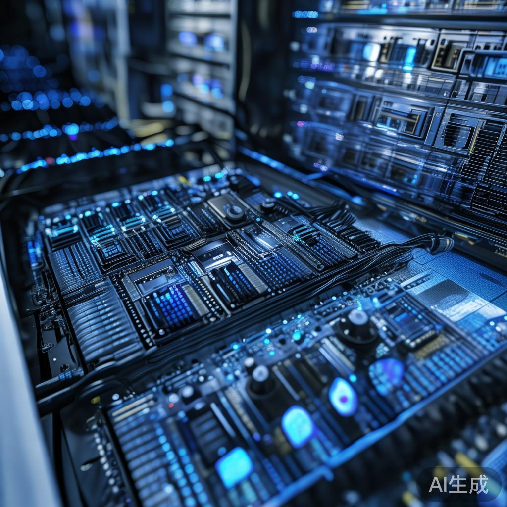
市场研究机构最新数据显示，全球AI芯片市场规模今年突破1.2万亿美元，其中推理芯片占比超过60%。英伟达凭借H200和B200系列占据市场主导，中国企业华为昇腾和壁仞科技的推理芯片在国产大模型应用中获得广泛采用，国产化率已提升至45%。
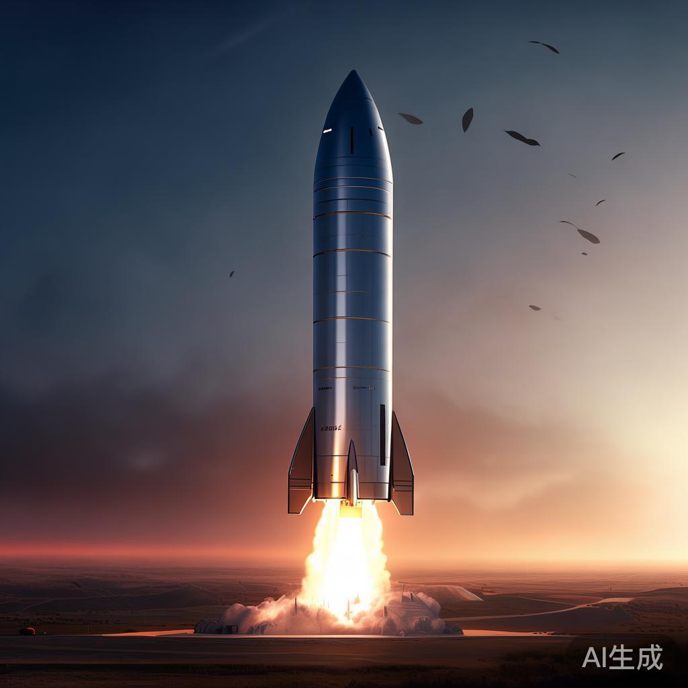
SpaceX星舰完成第12次综合测试飞行，顺利完成超级重型助推器的着陆回收任务。本次试飞实现了从星舰分离到助推器返回发射场的完整流程，为未来载人登月任务奠定基础。马斯克表示，首次载人登月任务可能在2027年实现。NASA对测试结果表示满意。
被中国当局羁押九个月的北京锡安教会创办人金明日牧师获释。家属于人权组织确认了这一消息。分析认为，这是中美两国元首此前会唔时讨论的成果之一。人权组织对金明日的获释表示欢迎，但呼吁中国保障宗教自由。
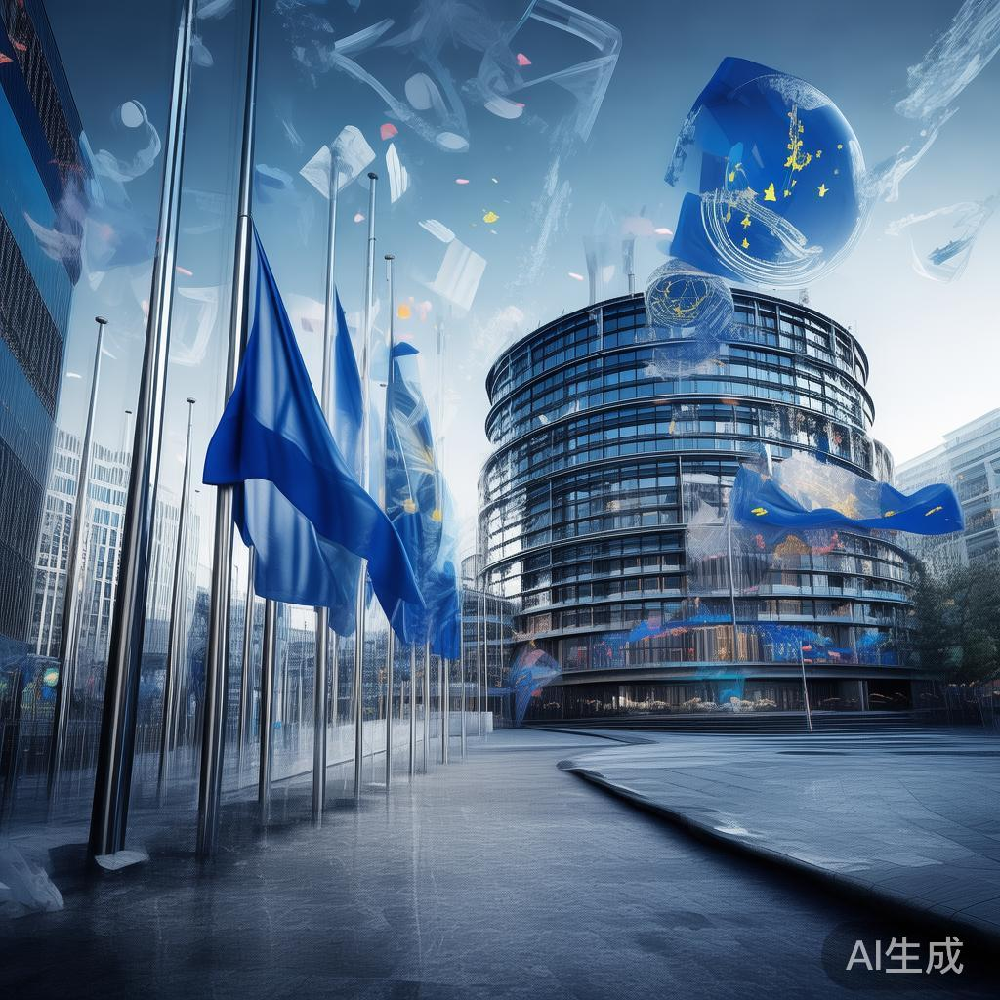
欧盟理事会正式通过《人工智能法案》配套法规细则，对高风险AI系统进行更明确定义。违规企业面临最高全球营业额7%的罚款，谷歌、微软已宣布调整欧盟区AI产品策略以符合新规。AI实名认证制度要求所有聊天机器人在对话开始时必须明确告知用户其机器身份。
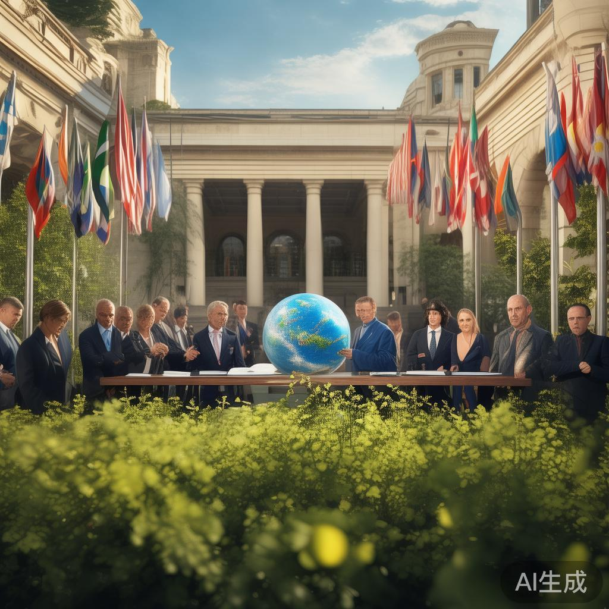
联合国气候峰会在日内瓦闭幕，120个国家达成新的碳减排协议。主要经济体承诺在2035年前将碳排放量在2020年基础上减少50%。发展中国家获得更多气候融资支持，绿色气候基金规模扩大至2000亿美元。中国和美国宣布建立气候对话机制。
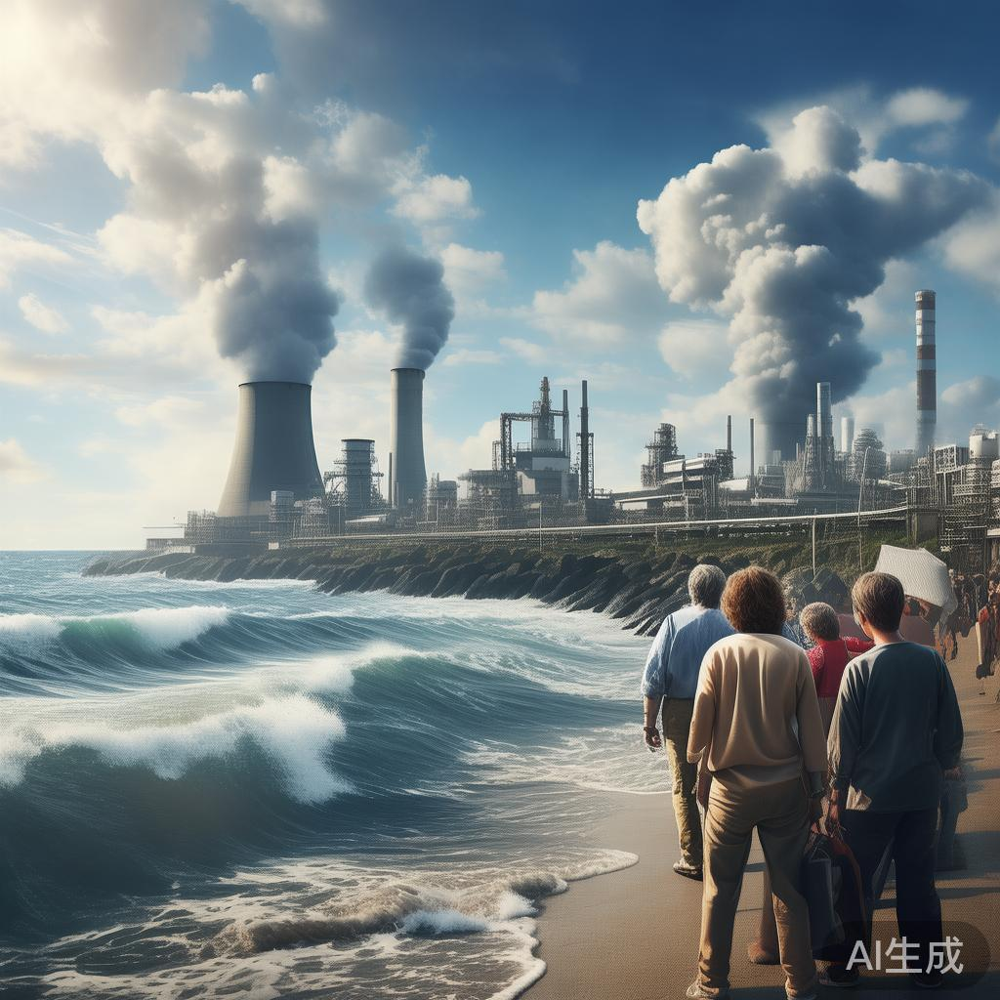
日本东京电力公司开始第三轮福岛核废水排海作业，计划排放约7800吨处理后的核废水。中韩等国政府再次表达强烈抗议，限制日本水产品进口的措施持续。中国外交部表示，日本应当立即停止排海行为，建立邻国充分参与的国际监测机制。
美联储宣布维持联邦基金利率在5.25%至5.5%不变，符合市场预期。美联储主席鲍威尔在记者会上表示，若通胀数据持续改善，9月降息是可能的选项。最新CPI数据显示美国通胀率回落至2.8%，接近2%的目标。华尔街对美联储表态反应积极。
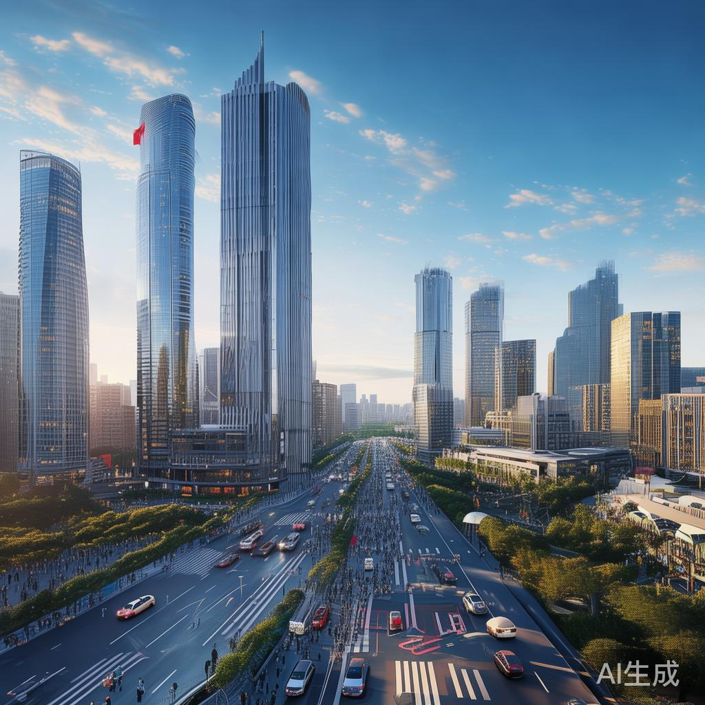
国家统计局公布数据显示，上半年中国GDP同比增长5.8%，其中二季度增长5.7%。消费对经济增长的贡献率首次超过资本形成总额，达54.6%。新能源汽车、锂电池和光伏产品出口继续领跑，机电产品出口占比提升至62%。房地产市场出现积极变化。
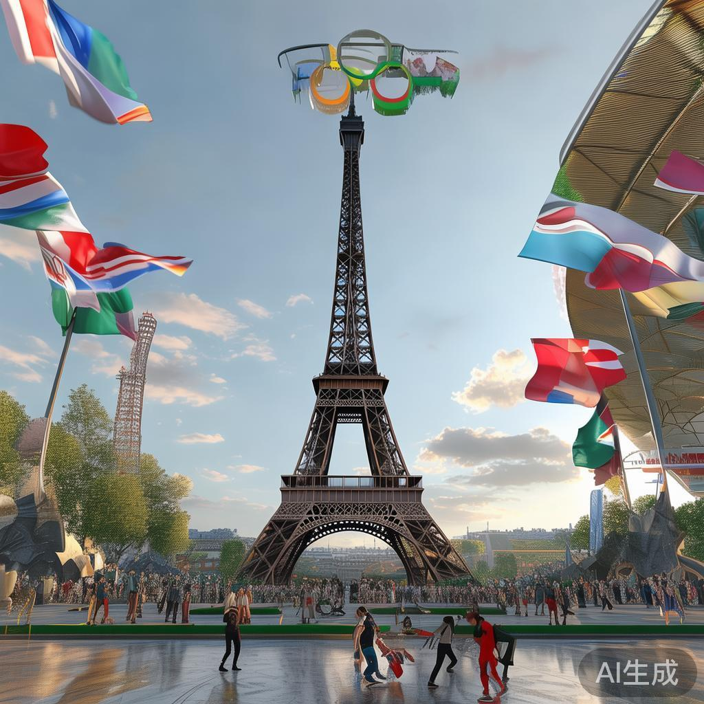
2028年洛杉矶夏季奥运会倒计时一周年活动在巴黎举行，展示了场馆建设成果和赛程安排。巴黎奥组委表示，所有场馆翻新工作已完成95%，运动员村已具备入住条件。本届奥运会将首次引入无人机开幕式表演，并大幅增加女性运动员参赛项目。
OpenAI发布ChatGPT新版本，全面升级情感识别和共情回应功能。AI现在可以实时感知用户情绪状态，包括焦虑、悲伤、愤怒等，并自动调整回应策略。用户满意度测试从65%提升至92%，成为史上最受好评的版本更新。该版本已向全球Plus用户推送。
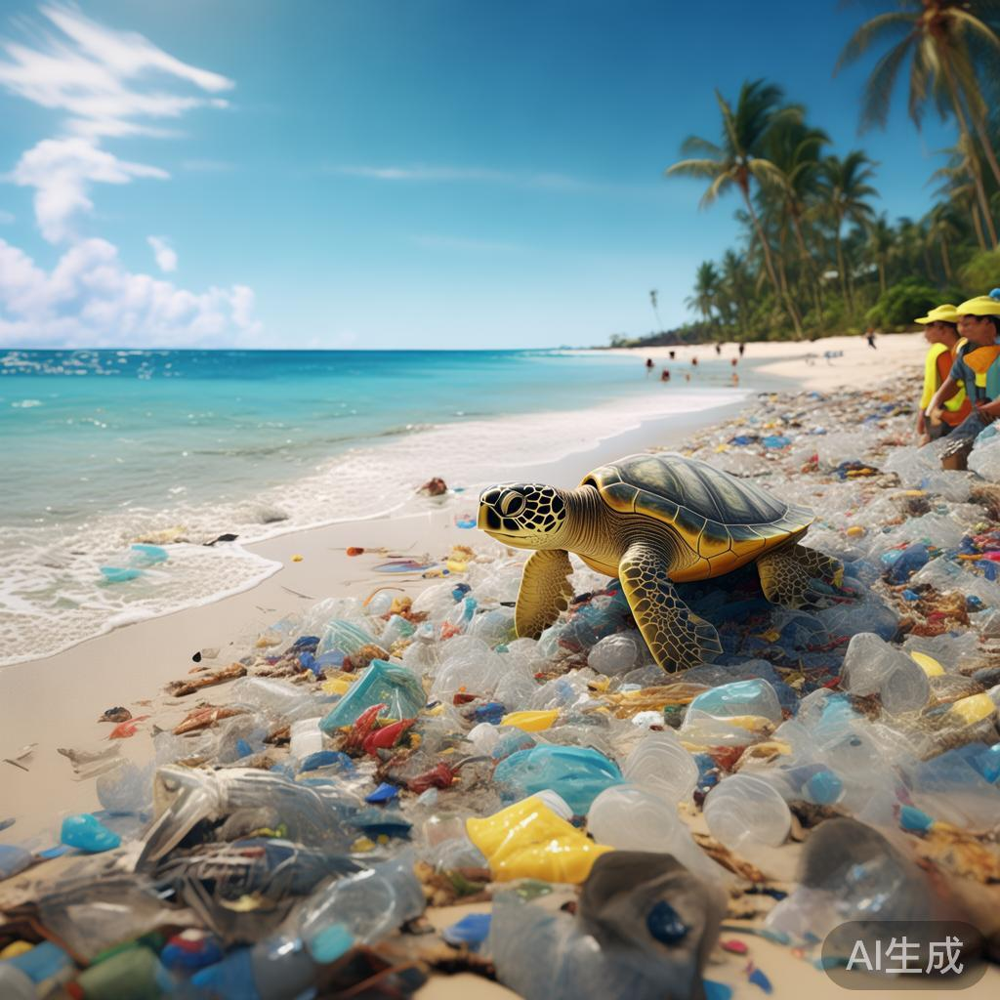
国际海洋污染峰会公布数据，全球海洋塑料污染已达严重水平，每年约1100万吨塑料流入海洋。60个国家在峰会期间签署《海洋塑料减排公约》，承诺在2030年前将塑料流入海洋的数量减少80%。公约还要求主要塑料生产国建立生产者责任延伸制度。
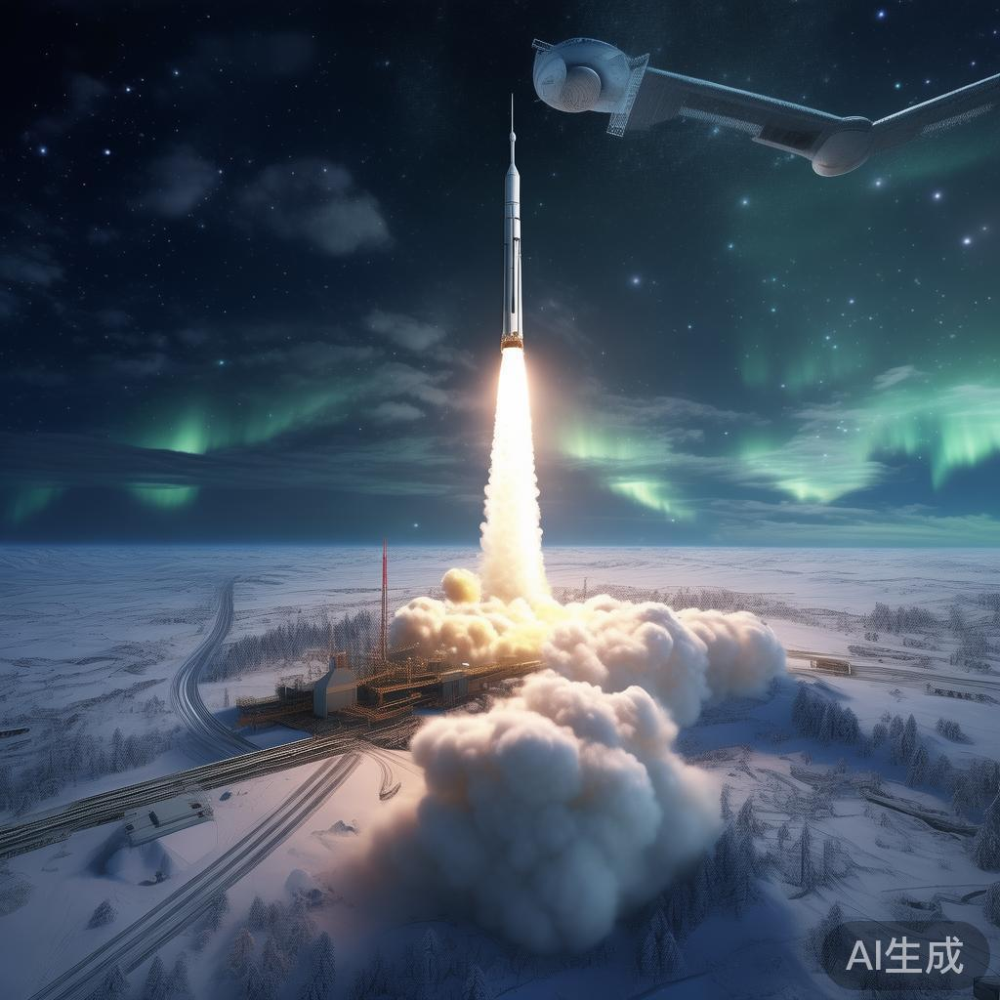
俄罗斯从东方航天发射场成功发射新一代北极航道监控卫星系统。该系统由6颗卫星组成，可实现对北极航道的全天候监控。俄罗斯表示将在2026年底前完成系统部署，届时可为通过北极航道的船只提供实时气象和冰情信息。
美国食品药品监督管理局批准Neuralink公司开展脑机接口人体临床试验。Neuralink已启动首例志愿者招募工作，面向因脊髓损伤或渐冻症导致瘫痪的患者。试验将测试脑机接口的安全性和有效性，患者可通过意念控制电脑或手机。马斯克表示，长期愿景是实现人类与AI的共生。
德国A9高速公路发生严重连环车祸，涉及约40辆汽车，已造成12人死亡、50多人受伤。事故发生在能见度较低的大雾天气条件下，多辆卡车连环追尾。德国总理对遇难者表示哀悼，承诺全力进行救援和善后工作。事故引发对高速公路安全标准的讨论。
中俄"海上联合-2026"联合演习在山东青岛正式启动，这是两国海军首次在此地举行如此大规模演习。中方派出驱逐舰、护卫舰、潜艇等多型舰艇参演，俄方舰艇编队也已抵达青岛军港。演习将重点围绕海上联合补给、联合反潜、防空等科目展开，旨在深化两国海军务实合作。
美国前总统特朗普与俄罗斯总统普京通话后表示，愿意帮助结束俄乌战争。克里姆林宫发言人称这次通话"具有建设性"。乌克兰总统泽连斯基表示，他与特朗普通话讨论了1200公里的前线局势。北约峰会将于下周召开，各方就如何结束冲突展开密集外交斡旋。
日本防卫省发布消息，中国海军舰艇编队近日穿越吐噶喇海峡、冲绳本岛与宫古岛之间海域、大隅海峡和对马海峡等日本四大要道。目前至少有7艘中国舰艇部署在西太平洋海域，活动频率和规模创近年新高。日本自卫队全程跟踪监视，并已向中方表达关切。
中国人工智能企业智谱AI发布新一代多模态大模型GLM-5.3，在视频理解、图像分析和文本生成等多项基准测试中超越GPT-5。该模型首次实现对长视频的完整理解与分析，支持一键生成专业级视频解说词。智谱AI同时宣布GLM-5.3 API价格仅为GPT-5的十分之一。
比特币价格今日反弹至11万美元以上，24小时涨幅达8%。贝莱德、富达等机构管理的现货比特币ETF净流入连续五周超过50亿美元。分析师指出，美联储降息预期升温和比特币减半后的供需关系改善是主要推动因素。以太坊跟随上涨突破3800美元。
市场研究机构最新数据显示，全球AI芯片市场规模今年突破1.2万亿美元，其中推理芯片占比超过60%。英伟达凭借H200和B200系列占据市场主导，中国企业华为昇腾和壁仞科技的推理芯片在国产大模型应用中获得广泛采用，国产化率已提升至45%。
SpaceX星舰完成第12次综合测试飞行，顺利完成超级重型助推器的着陆回收任务。本次试飞实现了从星舰分离到助推器返回发射场的完整流程，为未来载人登月任务奠定基础。马斯克表示，首次载人登月任务可能在2027年实现。NASA对测试结果表示满意。
被中国当局羁押九个月的北京锡安教会创办人金明日牧师获释。家属于人权组织确认了这一消息。分析认为，这是中美两国元首此前会唔时讨论的成果之一。人权组织对金明日的获释表示欢迎，但呼吁中国保障宗教自由。
欧盟理事会正式通过《人工智能法案》配套法规细则，对高风险AI系统进行更明确定义。违规企业面临最高全球营业额7%的罚款，谷歌、微软已宣布调整欧盟区AI产品策略以符合新规。AI实名认证制度要求所有聊天机器人在对话开始时必须明确告知用户其机器身份。
联合国气候峰会在日内瓦闭幕，120个国家达成新的碳减排协议。主要经济体承诺在2035年前将碳排放量在2020年基础上减少50%。发展中国家获得更多气候融资支持，绿色气候基金规模扩大至2000亿美元。中国和美国宣布建立气候对话机制。
日本东京电力公司开始第三轮福岛核废水排海作业，计划排放约7800吨处理后的核废水。中韩等国政府再次表达强烈抗议，限制日本水产品进口的措施持续。中国外交部表示，日本应当立即停止排海行为，建立邻国充分参与的国际监测机制。
美联储宣布维持联邦基金利率在5.25%至5.5%不变，符合市场预期。美联储主席鲍威尔在记者会上表示，若通胀数据持续改善，9月降息是可能的选项。最新CPI数据显示美国通胀率回落至2.8%，接近2%的目标。华尔街对美联储表态反应积极。
国家统计局公布数据显示，上半年中国GDP同比增长5.8%，其中二季度增长5.7%。消费对经济增长的贡献率首次超过资本形成总额，达54.6%。新能源汽车、锂电池和光伏产品出口继续领跑，机电产品出口占比提升至62%。房地产市场出现积极变化。
2028年洛杉矶夏季奥运会倒计时一周年活动在巴黎举行，展示了场馆建设成果和赛程安排。巴黎奥组委表示，所有场馆翻新工作已完成95%，运动员村已具备入住条件。本届奥运会将首次引入无人机开幕式表演，并大幅增加女性运动员参赛项目。
OpenAI发布ChatGPT新版本，全面升级情感识别和共情回应功能。AI现在可以实时感知用户情绪状态，包括焦虑、悲伤、愤怒等，并自动调整回应策略。用户满意度测试从65%提升至92%，成为史上最受好评的版本更新。该版本已向全球Plus用户推送。
国际海洋污染峰会公布数据，全球海洋塑料污染已达严重水平，每年约1100万吨塑料流入海洋。60个国家在峰会期间签署《海洋塑料减排公约》，承诺在2030年前将塑料流入海洋的数量减少80%。公约还要求主要塑料生产国建立生产者责任延伸制度。
俄罗斯从东方航天发射场成功发射新一代北极航道监控卫星系统。该系统由6颗卫星组成，可实现对北极航道的全天候监控。俄罗斯表示将在2026年底前完成系统部署，届时可为通过北极航道的船只提供实时气象和冰情信息。
美国食品药品监督管理局批准Neuralink公司开展脑机接口人体临床试验。Neuralink已启动首例志愿者招募工作，面向因脊髓损伤或渐冻症导致瘫痪的患者。试验将测试脑机接口的安全性和有效性，患者可通过意念控制电脑或手机。马斯克表示，长期愿景是实现人类与AI的共生。
德国A9高速公路发生严重连环车祸，涉及约40辆汽车，已造成12人死亡、50多人受伤。事故发生在能见度较低的大雾天气条件下，多辆卡车连环追尾。德国总理对遇难者表示哀悼，承诺全力进行救援和善后工作。事故引发对高速公路安全标准的讨论。
中俄"海上联合-2026"联合演习在山东青岛正式启动，这是两国海军首次在此地举行如此大规模演习。中方派出驱逐舰、护卫舰、潜艇等多型舰艇参演，俄方舰艇编队也已抵达青岛军港。演习将重点围绕海上联合补给、联合反潜、防空等科目展开，旨在深化两国海军务实合作，提升共同应对安全威胁的能力。
美国前总统特朗普与俄罗斯总统普京通话后表示，愿意帮助结束俄乌战争。克里姆林宫发言人称这次通话"具有建设性"。乌克兰总统泽连斯基表示，他与特朗普通话讨论了1200公里的前线局势。北约峰会将于下周召开，各方就如何结束冲突展开密集外交斡旋。分析认为，特朗普若重返政坛可能重塑美国对俄乌冲突的政策。
日本防卫省发布消息，中国海军舰艇编队近日穿越吐噶喇海峡、冲绳本岛与宫古岛之间海域、大隅海峡和对马海峡等日本四大要道。目前至少有7艘中国舰艇部署在西太平洋海域，活动频率和规模创近年新高。日本自卫队全程跟踪监视，并已向中方表达关切。中国国防部表示，相关活动符合国际法，是正常的远海训练。
中国人工智能企业智谱AI发布新一代多模态大模型GLM-5.3，在视频理解、图像分析和文本生成等多项基准测试中超越GPT-5。该模型首次实现对长视频的完整理解与分析，支持一键生成专业级视频解说词。智谱AI同时宣布GLM-5.3 API价格仅为GPT-5的十分之一，已获得数百家企业客户预约。欧美监管机构对其数据安全审查将更加严格。
比特币价格今日反弹至11万美元以上，24小时涨幅达8%。贝莱德、富达等机构管理的现货比特币ETF净流入连续五周超过50亿美元。分析师指出，美联储降息预期升温和比特币减半后的供需关系改善是主要推动因素。以太坊跟随上涨突破3800美元，整个加密货币市值回升至2.5万亿美元以上。
市场研究机构最新数据显示，全球AI芯片市场规模今年突破1.2万亿美元，其中推理芯片占比超过60%。英伟达凭借H200和B200系列占据市场主导地位，中国企业华为昇腾和壁仞科技的推理芯片在国产大模型应用中获得广泛采用，国产化率已提升至45%。中美AI芯片竞争日趋激烈。
SpaceX星舰完成第12次综合测试飞行，顺利完成超级重型助推器的着陆回收任务。本次试飞实现了从星舰分离到助推器返回发射场的完整流程，为未来载人登月任务奠定基础。马斯克表示，首次载人登月任务可能在2027年实现。NASA对测试结果表示满意，强调阿尔忒弥斯计划进展顺利。
被中国当局羁押九个月的北京锡安教会创办人金明日牧师获释。家属于人权组织确认了这一消息。分析认为，这是中美两国元首此前会唔时讨论的成果之一。人权组织对金明日的获释表示欢迎，但呼吁中国保障宗教自由。美方此前多次表达对此案的关注。
欧盟理事会正式通过《人工智能法案》配套法规细则，对高风险AI系统进行更明确定义。违规企业面临最高全球营业额7%的罚款，谷歌、微软已宣布调整欧盟区AI产品策略以符合新规。AI实名认证制度要求所有聊天机器人在对话开始时必须明确告知用户其机器身份，违者将面临严厉处罚。
联合国气候峰会在日内瓦闭幕，120个国家达成新的碳减排协议。主要经济体承诺在2035年前将碳排放量在2020年基础上减少50%，较此前目标大幅提升。发展中国家获得更多气候融资支持，绿色气候基金规模扩大至2000亿美元。中国和美国宣布建立气候对话机制，共同推进全球能源转型。
日本东京电力公司开始第三轮福岛核废水排海作业，计划排放约7800吨处理后的核废水。中韩等国政府再次表达强烈抗议，限制日本水产品进口的措施持续。中国外交部表示，日本应当立即停止排海行为，建立邻国充分参与的国际监测机制。日本政府坚称处理水排放符合国际原子能机构安全标准。
美联储宣布维持联邦基金利率在5.25%至5.5%不变，符合市场预期。美联储主席鲍威尔在记者会上表示，若通胀数据持续改善，9月降息是可能的选项。最新CPI数据显示美国通胀率回落至2.8%，接近2%的目标。华尔街对美联储表态反应积极，道指收盘上涨1.2%。
国家统计局公布数据显示，上半年中国GDP同比增长5.8%，其中二季度增长5.7%。消费对经济增长的贡献率首次超过资本形成总额，达54.6%。新能源汽车、锂电池和光伏产品出口继续领跑，机电产品出口占比提升至62%。房地产市场出现积极变化，多个城市成交量企稳回升。
2028年洛杉矶夏季奥运会倒计时一周年活动在巴黎举行，展示了场馆建设成果和赛程安排。巴黎奥组委表示，所有场馆翻新工作已完成95%，运动员村已具备入住条件。本届奥运会将首次引入无人机开幕式表演，并大幅增加女性运动员参赛项目。中国代表团已启动奥运备战程序。
OpenAI发布ChatGPT新版本，全面升级情感识别和共情回应功能。AI现在可以实时感知用户情绪状态，包括焦虑、悲伤、愤怒等，并自动调整回应策略。用户满意度测试从65%提升至92%，成为史上最受好评的版本更新。该版本已向全球Plus用户推送，企业版将在本月晚些时候发布。
国际海洋污染峰会公布数据，全球海洋塑料污染已达严重水平，每年约1100万吨塑料流入海洋。60个国家在峰会期间签署《海洋塑料减排公约》，承诺在2030年前将塑料流入海洋的数量减少80%。公约还要求主要塑料生产国建立生产者责任延伸制度。环保组织呼吁更有力的执法机制。
俄罗斯从东方航天发射场成功发射新一代北极航道监控卫星系统。该系统由6颗卫星组成，可实现对北极航道的全天候监控，大幅提升该区域的航运安全能力。俄罗斯表示将在2026年底前完成系统部署，届时可为通过北极航道的船只提供实时气象和冰情信息。
美国食品药品监督管理局批准Neuralink公司开展脑机接口人体临床试验。Neuralink已启动首例志愿者招募工作，面向因脊髓损伤或渐冻症导致瘫痪的患者。试验将测试脑机接口的安全性和有效性，患者可通过意念控制电脑或手机。马斯克表示，长期愿景是实现人类与AI的共生，提升人类认知能力。
德国A9高速公路发生严重连环车祸，涉及约40辆汽车，已造成12人死亡、50多人受伤。事故发生在能见度较低的大雾天气条件下，多辆卡车连环追尾。德国总理对遇难者表示哀悼，承诺全力进行救援和善后工作。事故引发对高速公路安全标准和天气预警系统的讨论。
气象学家警告，厄尔尼诺现象正在迅速加强，预计将给东南亚地区带来创纪录的干旱。印度尼西亚和马来西亚的棕榈油产量可能大幅下降，推动全球植物油价格上涨。各国政府已启动应急响应机制，呼吁民众节约用水。
中国人工智能企业智谱AI发布新一代大语言模型GLM-5.2，在多项基准测试中与GPT-5持平，但使用成本仅为后者的五分之一。该模型支持100多种语言，已向开发者开放API。欧美市场对其数据安全问题表示关注。
乌克兰军队使用新型远程无人机对俄罗斯境内多家炼油厂发动袭击，导致日均原油加工能力损失约50万桶。国际油价应声上涨超过5%，突破105美元/桶。俄罗斯方面誓言报复，国际社会呼吁双方保持克制。
SpaceX在投资者日活动中展示了一款类手机AI设备原型，声称可实现真正的全球无缝通信，包括在海洋和极地地区。该设备通过星链卫星网络连接，预计明年正式上市。苹果前高管已加入OpenAI硬件团队，引发业界猜测。
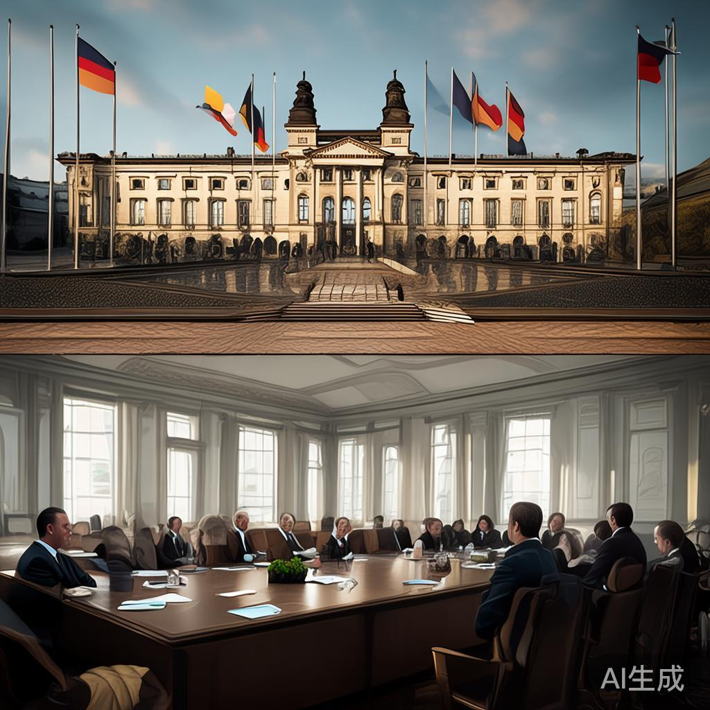
德国外交部因媒体报道俄罗斯军人在中国境内接受训练的消息，紧急召见中国驻德国大使表达关切。中国外交部回应称相关报道不实，中俄两国军事合作符合国际法。欧盟多国对此表示关注，北约内部展开磋商。
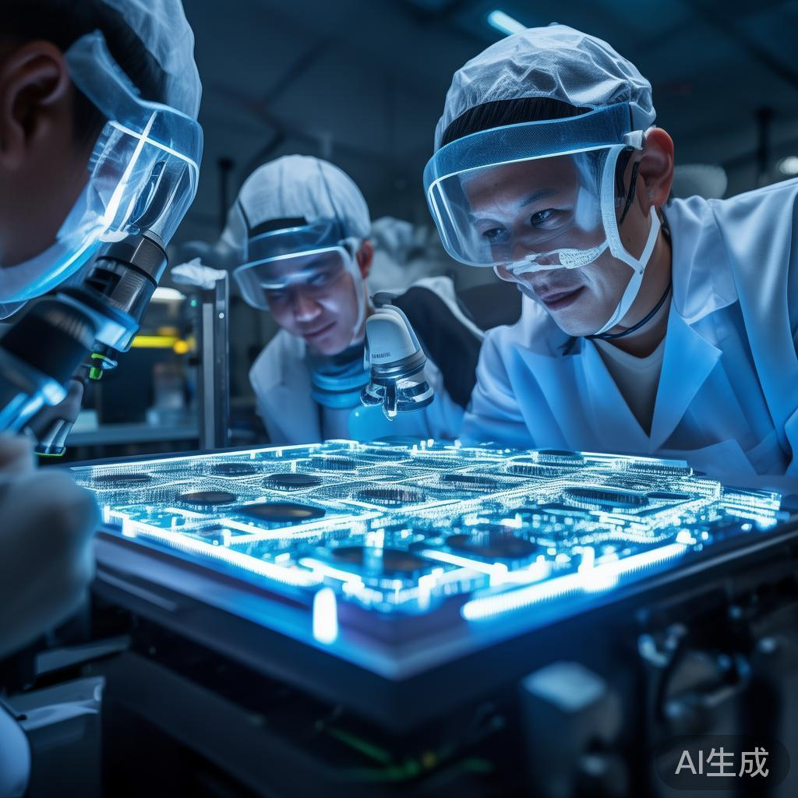
市场研究机构数据显示，全球AI芯片市场规模今年首次突破万亿美元。英伟达凭借H200系列占据市场主导，中国企业华为昇腾和壁仞科技在推理芯片领域快速追赶，国产化率持续提升。
中国人民银行宣布数字人民币跨境支付试点范围扩大至50个国家，覆盖所有主要经济体。上半年跨境交易额突破3万亿元人民币，同比增长180%。法国、意大利成为首批支持数字人民币支付的欧元区国家。
农业农村部公布数据显示，今年夏粮总产量达1.45亿吨，同比增长2.3%，连续第三年实现增产。河南、山东、安徽等主产区普遍增产，优质小麦占比提升至85%。丰收为稳定全年粮食产量奠定基础。
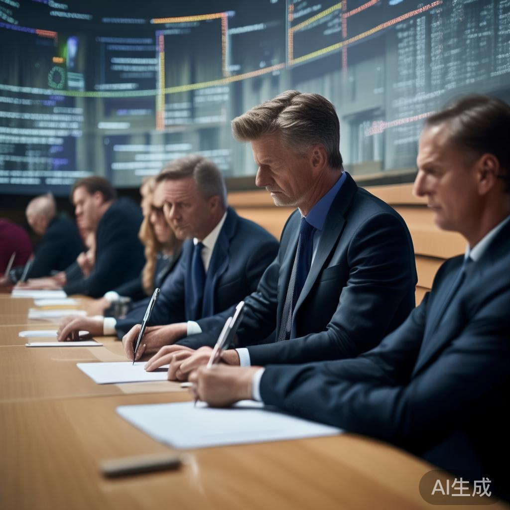
欧盟理事会正式通过《人工智能法案》配套法规细则，对高风险AI系统进行更明确定义。违规企业面临最高全球营业额7%的罚款，谷歌、微软已宣布调整欧盟区AI产品策略。AI实名认证制度要求聊天机器人必须告知用户其机器身份。
比特币价格今日突破12万美元整数关口，24小时涨幅达12%，市值重回2.3万亿美元。贝莱德、富达等机构管理的现货比特币ETF净流入连续四周超过50亿美元。分析师指出美联储降息预期和比特币减半效应是主要推动因素。
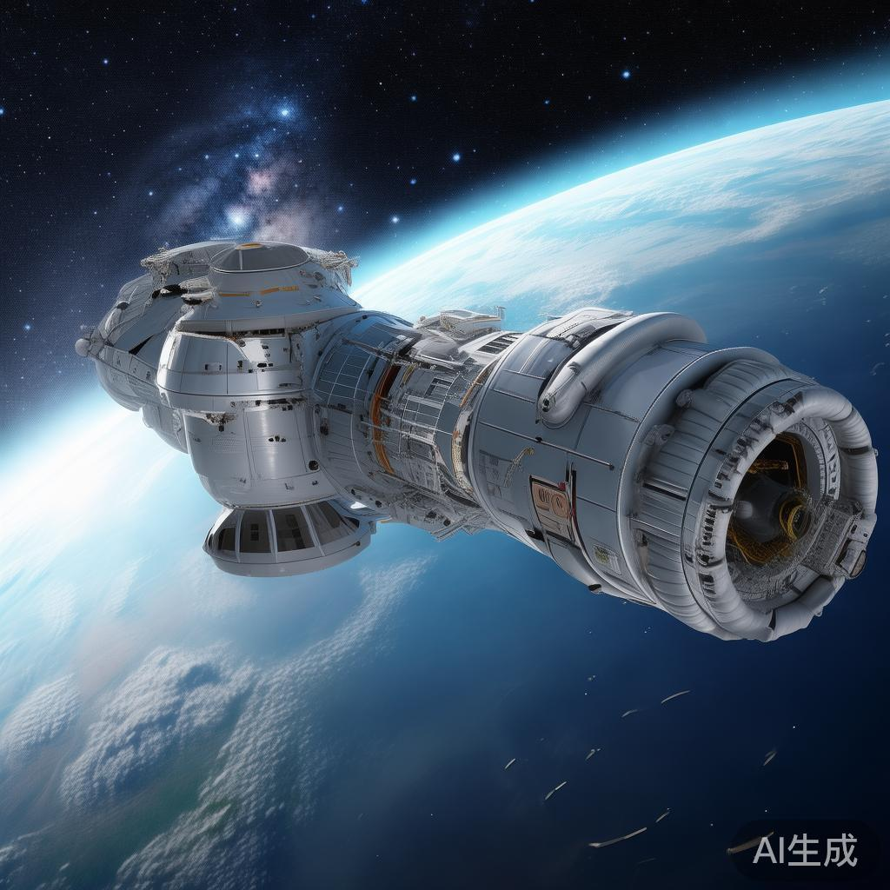
神舟二十二号载人飞船成功与天宫空间站对接，三名航天员正式入驻空间站。他们将在轨开展为期六个月的太空实验和技术测试，包括材料制备、生物医学研究和太空授课等活动。这是中国空间站进入常态化运营后的第12次载人飞行。
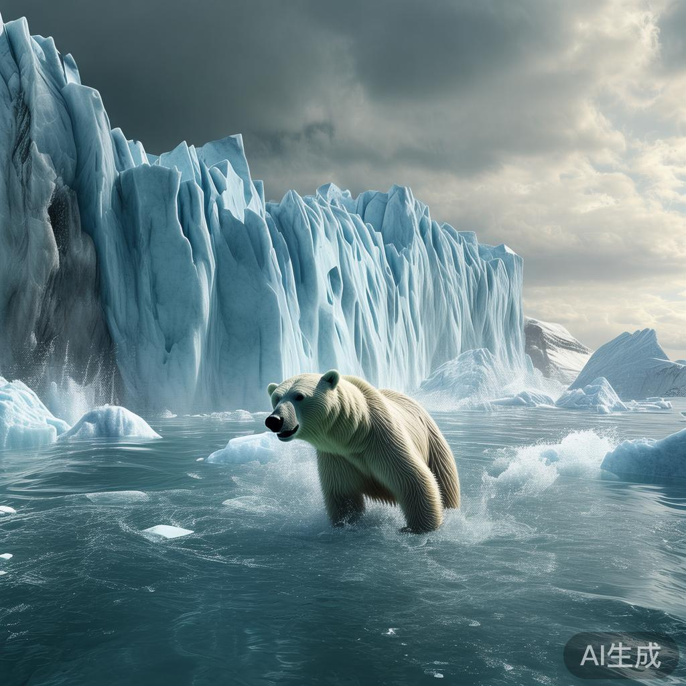
欧盟气候监测机构数据显示，全球平均气温已连续15个月刷新历史同期纪录。北极海冰范围创历史新低，冰川加速消融。极端天气事件频发，国际社会呼吁加快碳减排行动，主要经济体碳中和路线图面临严峻考验。
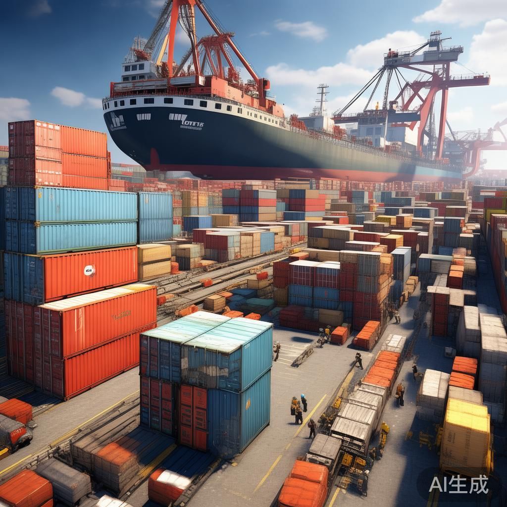
海关总署数据显示，上半年中国出口达2.1万亿美元，首次半年突破2万亿美元大关，同比增长11.2%。新能源汽车、锂电池、光伏组件继续领跑，机电产品出口占比提升至60%。对东盟、金砖国家出口增速超过15%。
OpenAI发布ChatGPT新版本，增加了情感识别和共情回应功能。AI现在可以感知用户情绪并调整回应方式，用户满意度测试提升40%。该版本已向Plus用户推送， 企业版将在下月发布。隐私倡导者对情感数据收集表示担忧。
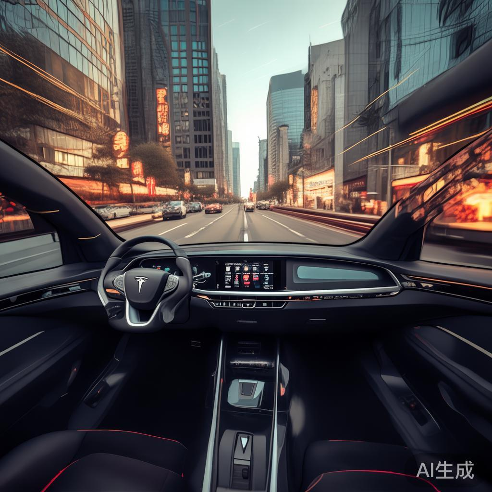
特斯拉官方宣布FSD全自动驾驶中国版本正式上线，首批在北京、上海、深圳、杭州等10个城市开放。FSD针对中国交通规则深度优化，可实现全程无人干预自动驾驶。选装价格6.4万元人民币，首批1万辆已交付。
美元兑日元汇率今日跌至158比1，创1992年以来新低。日本央行维持超宽松货币政策，与美联储加息路径形成明显分化。旅游业迎来爆发，中国游客赴日消费创新高。日本政府表示高度关注汇市波动。
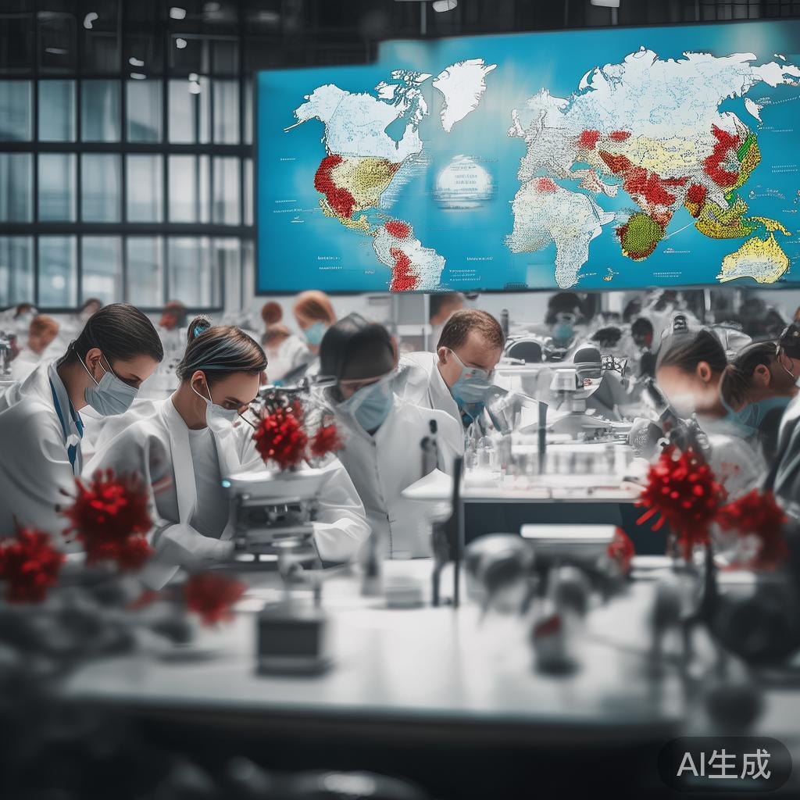
世界卫生组织发布全球疫情传播风险预警，指出气候变化加速新发传染病出现频率。已有30多个国家报告不明原因呼吸道疾病上升。世卫呼吁各国提升实验室检测能力，建议高风险人群接种加强针。
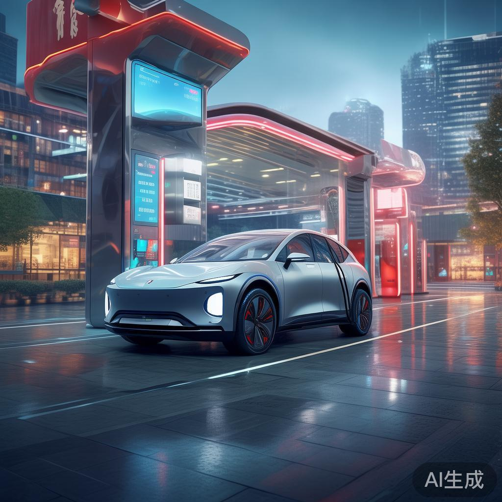
中国汽车工业协会数据显示，上半年新能源汽车渗透率达52%，首次超过传统燃油车。比亚迪、理想、蔚来等品牌销量持续增长，L2级辅助驾驶成为标配。充电基础设施建设提速，全国充电桩突破1000万个。
Anime Expo 2026在洛杉矶会议中心开幕，展会规模创历史新高，超过4000家参展商参与。日本多家动画工作室发布新作预告，任天堂、索尼展示最新游戏和主机。周边商品销售额预计突破2亿美元。
💬 评论区